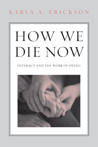

<body bgcolor="#FFFFFF" text="#000000" link="#0000FF" vlink="#CC0000" alink="#CC0000"><center><hr width="350" size="1" align="center" noshade>Insights from elders and their caregivers on the end of life<hr width="350" size="1" align="center" noshade><p><a href="https://cdcshoppingcart.uchicago.edu/Cart/ChicagoBook.aspx?ISBN=9781439908235&&PRESS=temple" target="_top">Buy this book!</a> | <a href="https://cdcshoppingcart.uchicago.edu/Cart/Cart.aspx?PRESS=temple" target="_top">View Cart</a> | <a href="https://cdcshoppingcart.uchicago.edu/Cart/Cart.aspx?PRESS=temple" target="_top">Check Out</a></p><p></p></center><!--none//--><h1>How We Die Now</h1>
<H2>Intimacy and the Work of Dying</H2>
<h3>Karla A. Erickson</h3>
<P>cloth 1-4399-0823-0 $90.50, Oct 13, <FONT COLOR=#990033>Available</FONT>
<br>paper 1-4399-0824-9 $26.95, Oct 13, <FONT COLOR=#990033>Available</FONT>
<br>Electronic Book 1-4399-0825-7 $25.95 <FONT COLOR=#990033>Available</FONT>
<BR> 208 pp
5.5 x 8.25
</P><BLOCKQUOTE><I>"Presented with insight and compassion, </I>How We Die Now<I> teaches as it sorts the complexity of what is called the �work of dying.� This book is not so much about the dying process as it is about what can be learned from those who work with those who are dying. Surprises and lessons abound as this gray area at the end of life comes into view with clarity."</I><br>&#151<b>Jay Gubrium</b>, Professor and Chair of Sociology at the University of Missouri and author of <I>Living and Dying at Murray Manor</I></I></BLOCKQUOTE>
<P>As we live longer and die slower and differently than our ancestors, we have come to rely more and more on end-of-life caregivers. These workers navigate a changing landscape of old age and death that many of us have little preparation to encounter. <i>How We Die Now</i> is an absorbing and sensitive investigation of end-of-life issues from the perspectives of patients, relatives, medical professionals, and support staff.
<P>Karla Erickson immersed herself in the daily life of workers and elders in a Midwestern community for over two years to explore important questions around the theme of �how we die now.� She moves readers through and beyond the many fears that attend the social condition of old age and reveals the pleasures of living longer and the costs of slower, sometimes senseless ways of dying.
<P>For all of us who are grappling with the �elder boom,� <i>How We Die Now</i> offers new ways of thinking about our longer lives.
<BR>&nbsp;<h2>Excerpt</h2><P>Excerpt available at <a href="http://www.temple.edu/tempress">www.temple.edu/tempress</a></p>
<BR>&nbsp;<h2>Reviews</h2>
<p><i>"Erickson is most upbeat about the aging process and dying�a glass half full mentality�yet she does not sugarcoat the information. Her integration of aging and dying in the book is nicely handled, and she asks a series of questions that make the reader think. Erickson�s participant-observation work is also to be applauded, as most studies neglect significant actors such as nursing assistants. The quotations and interactions from her interviews, which are excellent, really bring the situation close to home for the reader."</i><br>&#151<b>George Dickinson</b>, Professor of Sociology at the College of Charleston and coauthor of <i>Understanding Dying, Death, and Bereavement</i>
<p><i>"</i>How We Die Now<i> touches on increasingly common experiences with the problems associated with care of the dying. Erickson has an interesting story to tell, and her book makes a distinctive contribution to the literature on death and dying, not only because of its focus on one continuing care retirement community but also because of its sociological approach. That is the book�s great dual strength."</i><br>&#151<b>Daniel Callahan</b>, Senior Research Scholar at and President Emeritus of the Hastings Center and Codirector of the Yale-Hastings Program in Ethics and Health Policy
<p><i>"Erickson has chosen a timely topic. As technological brinkmanship enables people to stay alive for many more years than previously, the quality of life during these extra years is being called into question.... Erickson's call for better treatment of the elderly during these waning years and the need to make more informed decisions about extending life is an important one.... VERDICT: A well-meaning contribution to an extremely important subject."</i> <br>&#151<b><i>Library Journal</i></b>
<p><i>"</i>How We Die Now<i> attempts to make observations regarding the work of death for Americans in the 21st century. Clearly, death experiences are as unique as lives.... Erickson bases the greater part of the text upon a multilevel extended care facility and its residents and staff.... The brief glimpses into these data were the bright spots of the work. The author touches on why aging Americans may want to avoid extended care facilities, racial disparities, and fears that surround nursing care facilities for the aged. The sort of multileveled facility that is the center of the study is often seen as desirable and preferable to traditional nursing home facilities.... Summing Up: Recommended."</i> <br>&#151<b><i>Choice</i></b>
<p><i>"Uniquely, this book gently unearths some of the myths and taboos that surround why people are also dying differently. Erickson explores the concept of the �Longevity divide� and her use of the participant observation technique gives her research a robust framework which carries the reader through the book towards the more probing and challenging sections. The authority Erickson commands by her commitment to her research is admirable and is reflected in the book. This is not simply a quick project but a heartfelt long-term commitment which is reflected through each page and engages the reader at every level. It is the interwoven personal stories that make the book so engaging and underpin the medical practice and academic learning and knowledge. This book feels like a journey.... Erickson's purpose, I believe, in writing this book was to engage with the reader emotionally first, to write a book that would change people's thoughts, behaviours and practice about how we make the dying experience a better one. She has done that superbly by underpinning that intention with a sound academic literature review and excellent research. This gives the reader confidence at every level."</i><br>&#151<b><i>Ageing & Society</i></b>
<p><i>"[A]t the end of the book, in its final chapters as it were, that issues of dying are really addressed.... Erickson values longer life, thinks that the dependency it brings can be a good thing, can teach us all more about interdependency and caring."</i><br>&#151<b><i>Contemporary Sociology</i></b>
<p><i>"In her study of a continuing-care retirement community, Karla A. Erickson portrays aging and dying with concern and compassion. She brings a fresh view to late life through her detailed ethnographic study of 'Winthrop House,' a respected levels-of-care facility in a small Midwestern college town. As an ethnographer of labor, Erickson aims to discover how workers accomplish the intimate and often invisible work of caring for aging and dying residents�. Erickson does considerable work in defining and opposing common beliefs about aging and dying, many of which are residual from generations past. Yet as dying lengthens, new questions arise about how to live while dying."</i><br>&#151<b><i>American Journal of Sociology</i></b>
<BR>&nbsp;<h2>Contents</h2><P>
<p>Acknowledgments
<br>
<br>1. How We Die Now: Americans Aging and Dying in the Twenty-First Century
<br>2. The Paradox of Long-Term Care: We Need It; We Fear It
<br>3. Transitioning Together: Living, Working, Aging, and Dying at Winthrop House
<br>4. Lessons from the End of Life: What Workers Learn from Helping Others Die
<br>5. Mutual Interdependency: Belonging, Recognition, and the Rewards of Caring for One Another
<br>
<br>Afterword
<br>Glossary
<br>References
<br>Index</p>
</P><BR>&nbsp;<H2>About the Author(s)</H2>
<P><b>Karla A. Erickson</b> is an Associate Professor in the Department of Sociology at Grinnell College. She is the author of <i>The Hungry Cowboy: Service and Community in a Neighborhood Restaurant</i> and co-editor (with Hokulani Aikau and Jennifer Pierce) of <i>Feminist Waves, Feminist Generations, Life Stories from the Academy</i>.</P>
<BR><H2>Subject Categories</H2>
<p><A HREF="/tempress/death.html" TARGET="_top">Death & Dying</a>
<BR><A HREF="/tempress/health.html" TARGET="_top">Health and Health Policy</a>
<BR><A HREF="/tempress/sociology.html" TARGET="_top">Sociology</a>
</p>
<p align="center"><a href="https://cdcshoppingcart.uchicago.edu/Cart/ChicagoBook.aspx?ISBN=9781439908235&&PRESS=temple" target="_top">Buy this book!</a> | <a href="https://cdcshoppingcart.uchicago.edu/Cart/Cart.aspx?PRESS=temple" target="_top">View Cart</a> | <a href="https://cdcshoppingcart.uchicago.edu/Cart/Cart.aspx?PRESS=temple" target="_top">Check Out</a></p><p><font face="Arial" size="1"><a href="copyright.html" onMouseOver="window.status='Web Copyright Policy';return true;" onMouseOut="window.status=''" title="Web Copyright Policy">&copy;</a> 2015 <a href="http://www.temple.edu" target="new" onMouseOver="window.status='Link to Temple University home page';return true;" onMouseOut="window.status=''" title="Link to Temple University home page">Temple University</a>. All Rights Reserved. http://www.temple.edu/tempress/titles/2193_reg.html</font></p>